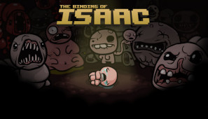
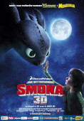

O mnie
Nazywam się Norbert Muzolf. Jestem uczniem Zespołu Szkuł Licealnych i Tecznicznych im. Ziemi Tucholskiejw Tucholi na kierunku technik informatyk. W podstawówce przez cztery lata skladałem origami. Od osmiu lat gram w kręglę. Nie przepadam za przedmiotami humanistycznymi, wolę się uczyć przedmiotów scisłych. W 2020 roku zostałem brązowym medalisyą w Mistrzostwach Polski Juniorów Młodszych.
Ulubione gry

TERRARIA
Kop, walcz, odkrywaj, buduj! Nic nie jest niemożliwe w tej przygodowej grze akcji. Świat to twoje płótno, a ziemia to twoja farba. Łap za narzędzia i ruszaj! Twórz broń, by walczyć przeciwko zróżnicowanym przeciwnikom w równie licznych biomach. Kop coraz głębiej, by odnajdywać nowe narzędzia, pieniądze oraz inne równie przydatne rzeczy. Zdobywaj surowce, dzięki którym możesz stworzyć wszystko, co może okazać się przydatne przy kreowaniu twojego własnego świata. Możesz zbudować dom, fortecę bądź nawet zamek. Z czasem twoje budowle zaczną gościć nowych lokatorów, którzy będą oferować ci masę różnego rodzaju sprzętu, który pomoże ci podczas twoich wpraw. Lecz strzeż się, czeka na ciebie jeszcze więcej wyzwań... Jesteś gotów podjąć się tego zadania?

OSU!
gra rytmiczna głównie opracowana, opublikowana i stworzona przez Deana Herberta. Oryginalnie wydana na Microsoft Windows 16 września 2007, gra została również przeniesiona na macOS, Linux, Android i iOS. Rozgrywka opiera się na tytułach, w tym Osu! Tatakae!

THE BINDING OF ISAAC
Gdy matka Isaaca zaczyna słyszeć głos Boga wymagającego, by dowiodła swej wiary, składając ofiarę, Isaac ucieka do piwnicy. Musi się tam zmierzyć ze stadami obłąkanych wrogów, zaginionym rodzeństwem, własnymi lękami oraz ostatecznie z własną matką. The Binding of Isaac to fabularna gra akcji z losowo generowanymi poziomami oraz wieloma elementami z gier rougelike. Podążając za Isaaciem w jego wędrówce, gracz odnajdzie dziwne skarby, które zmienią Isaaca, nadając mu nadludzkie zdolności i umożliwiając odkrywanie sekretów, walkę ze stadami tajemniczych potworów oraz wywalczenie drogi na wolność.
Ulubione filmym
IRON MAN
Geniusz, miliarder i playboy, Tony Stark, który odziedziczył po ojcu firmę zbrojeniową Stark Industries, znajduje się razem z przyjacielem, pułkownikiem Jamesem Rhodesem, w bazie wojskowej w Afganistanie, gdzie prezentuje swój najnowszy pocisk – „Jerycho”. Konwój, którym przewożony jest Stark, wpada w zasadzkę. Tony zostaje ciężko ranny, schwytany i uwięziony w jaskini przez grupę terrorystyczną Dziesięć Pierścieni. Współwięzień, Ho Yinsen, wszczepia mu w klatkę piersiową elektromagnes, aby ten blokował odłamkom granatu dostęp do serca. Lider Dziesięciu Pierścieni, Raza, oferuje Starkowi wolność w zamian za budowę pocisku „Jerycho”.

JAK WYTRESOWAĆ SMOKA
Akcja filmu rozgrywa się na wyspie Berk, gdzie wszyscy walczą ze smokami. Nastolatek o imieniu Czkawka jest nieco wątły i nie wychodzi mu polowanie na smoki. Stoik Ważki, jego ojciec a zarazem wódz plemienia, zapisuje go do szkoły walki ze smokami. Jednak gdy nastolatek znajduje w lesie rannego smoka, dowiaduje się, że to, jak wikingowie wyobrażają sobie smoki (czyli podłe bestie żyjące by zabijać), to nieprawda. Chłopak nazywa smoka Szczerbatek (z powodu umiejętności wysuwania zębów) i robi dla niego skórzaną protezę uszkodzonego płatu ogona oraz wiele udogodnień do latania (strzemiona, siodło, itp.). Czkawka ćwiczy ze Szczerbatkiem dowiadując się przy okazji wielu rzeczy o smokach i używa tej wiedzy na treningach. Podejrzliwa Astrid szuka przyczyny, dla której niezdarny Czkawka stał się najlepszym uczniem kursu. Po pewnym czasie odnajduje kryjówkę Szczerbatka. Początkowo zamierza z nim walczyć, ale Czkawka przekonuje ją, by zaufała smokowi. W końcu Astrid zgodziła się dosiąść zwierzęcia. Podczas wspólnego lotu Szczerbatek zabiera ich do smoczego leża, gdzie wszystkie okoliczne smoki przylatują z upolowanym jedzeniem i wrzucają je do wielkiej jamy. Okazuje się, że oddają je ogromnemu smokowi. Bestia zauważyła obcych i próbowała ich pożreć, lecz całej trójce udało się uciec.
SWORD ART ONLINE: ORDINAL SCALE
Akcja filmu ma miejsce 2026 roku, kiedy to gracze rzadziej korzystają z fantomatyki, na rzecz produkcji opartych na rzeczywistości rozszerzonej. Asuna, Sinon, Leafa, Silica, Klein i Agil grają najczęściej w najpopularniejszą grę tego rodzaju – „Ordinal Scale”. Gdy zaczynają się tam pojawiać bossy znane z Aincradu, Kirito postanawia dołączyć do gry. Jednocześnie usiłuje rozwikłać zagadkę zaników pamięci wśród graczy.